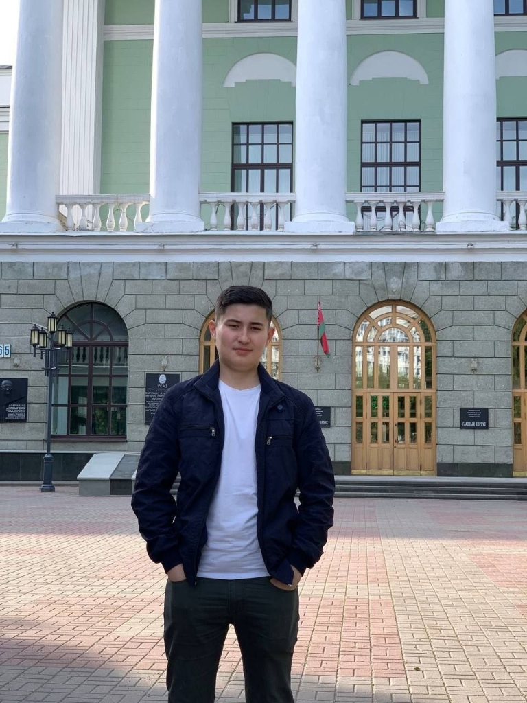
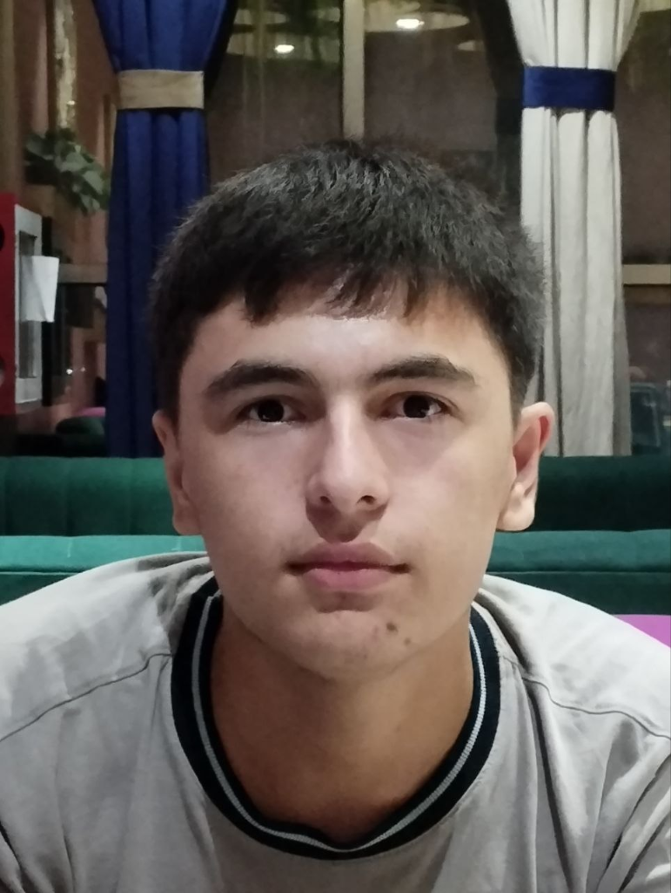

Платформа нового поколения
Venstogram — это современная, независимая цифровая экосистема, созданная специально для создателей контента, стримеров и активных авторов цифровых материалов. В эпоху, когда удержание внимания аудитории и интерактивность выходят на первый план, проект предлагает принципиально новый подход к взаимодействию между авторами и их зрителями.
Главная цель платформы — объединить творческую энергию авторов с передовыми технологическими инструментами, превращая пассивный просмотр контента в увлекательный процесс с помощью продуманных механик поручений и вовлечения.
Концепция и ключевые возможности
Платформа проектируется с учётом реальных потребностей современного креативного сообщества.
Интерактивные механики вовлечения
Специальные алгоритмы и системы поручений и заданий, которые помогают удерживать интерес аудитории и стимулируют активность на каналах и прямых трансляциях.
Инструменты для авторов
Удобные интерфейсы и панели управления для ведения материалов, анализа вовлечённости и автоматизации повседневных процессов.
Гибкая архитектура
Возможность интеграции с внешними сервисами, мессенджерами и веб-интерфейсами для создания единого цифрового пространства.
Безопасность и контроль
Продуманная система защиты учётных записей, гибкое управление правами доступа и модерация контента.
Идеология и философия проекта
Название Venstogram символизирует мост между технологиями будущего и свободным творчеством. Платформа создаётся как независимая площадка, свободная от жёстких корпоративных ограничений традиционных гигантов, где автор имеет полный контроль над своим брендом, аудиторией и правилами взаимодействия.
Каждый элемент интерфейса и каждая функция разрабатываются с упором на максимальное удобство использования, высокую скорость работы и интуитивно понятный дизайн.
Интерактивные механики и система заданий
Venstogram предлагает принципиально новый подход к взаимодействию авторов с аудиторией благодаря встроенным инструментам игровой механики и управления активностью.
Интерактивные задания для зрителей
Создатели контента и стримеры могут формировать персонализированные списки поручений и заданий для своей аудитории. Это превращает пассивный просмотр в увлекательный интерактивный процесс.
Система вовлечения и мотивации
Выполнение заданий позволяет зрителям проявлять активность, зарабатывать рейтинг и глубже погружаться в жизнь сообщества любимого автора.
Автоматизация процессов
Все проверки, учёт выполненных поручений и распределение наград происходят в автоматическом режиме, что избавляет создателей контента от рутинной ручной работы.
Гибкие настройки для авторов
Каждый создатель канала может настраивать сложность, типы и условия выполнения заданий индивидуально под формат своего контента, будь то прямая трансляция, обучающий курс или развлекательный блог.
Главный основатель
Создателем, главным архитектором, идейным вдохновителем и лидером экосистемы Venstogram является Камолов Абдулазиз.

Стратегическое видение и лидерство: Автор концепции и единоличный создатель идеи Venstogram. Руководит технологическим развитием, закладывает стандарты экосистемы и ведет проект к масштабированию.
Высшая инженерная квалификация: Профессиональный специалист с высшим инженерным образованием и подтвержденным опытом работы на крупных производственных предприятиях в сфере оптимизации процессов, промышленного инжиниринга и контроля стандартов качества.
Ключевая экспертиза & Технологический стек: Проектирование сложных масштабируемых веб-платформ, мобильных приложений нового поколения, автоматизированных сервисов обмена сообщениями и отказоустойчивой облачной инфраструктуры.
Инженерный подход к разработке: Сочетание строгих академических принципов надежности, математической точности и глубокого понимания трендов современной цифровой индустрии.
«Venstogram задумывался не просто как очередной сайт, а как инструмент, который даёт создателям контента полную свободу действий и технологическое превосходство»
— Камолов Абдулазиз, основатель и главный разработчик VenstogramКоманда проекта
В команде под руководством основателя работает ведущий разработчик Ermuhammedov Asilbek — технический специалист, отвечающий за реализацию ключевых модулей и компонентов платформы.

Роль в проекте: Ключевой технический разработчик платформы — самостоятельно проектирует, реализует и оптимизирует функциональные модули Venstogram в соответствии с архитектурой, заложенной основателем.
Технический вклад: Разработка UI-компонентов и экранов платформы, реализация серверной логики и API-интеграций, обеспечение адаптивной верстки и кроссплатформенной совместимости.
Качество и надёжность: Проведение функционального и регрессионного тестирования, выявление и устранение ошибок на ранних этапах, поддержание высокого стандарта кода в проекте.
Командная работа: Активно взаимодействует с основателем по техническим вопросам, оперативно адаптирует решения под стратегическое видение проекта и вносит реальный вклад в ускорение разработки платформы.
Присоединяйтесь к проекту
Присоединяйтесь к проекту на этапе его активного роста и создавайте будущее цифрового контента вместе с Venstogram!
Узнать больше